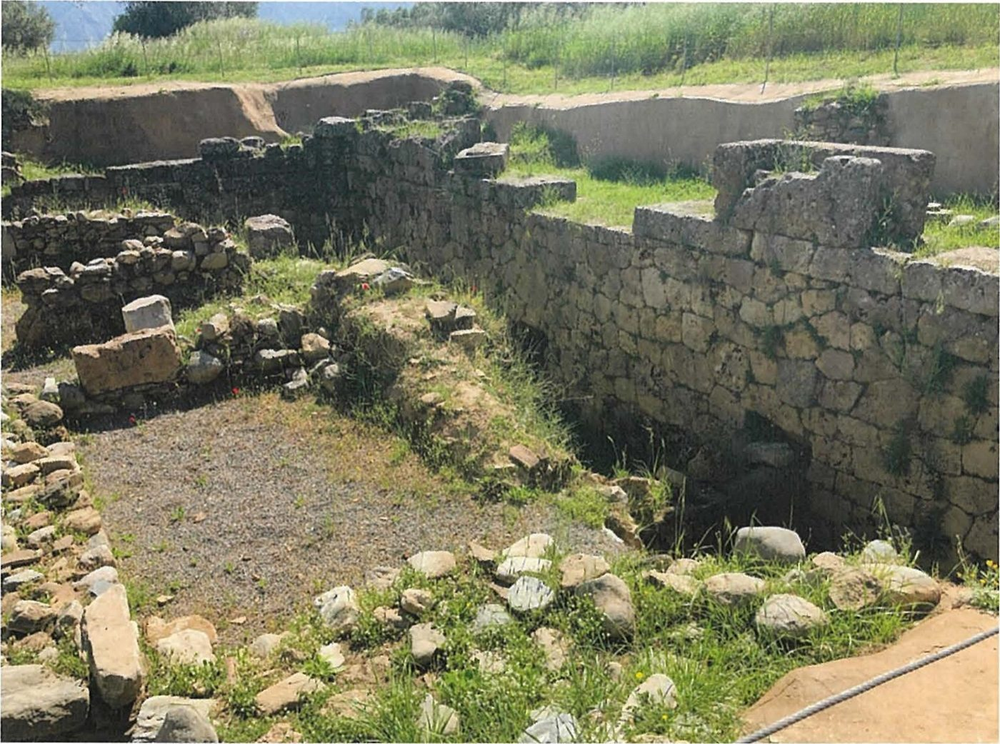
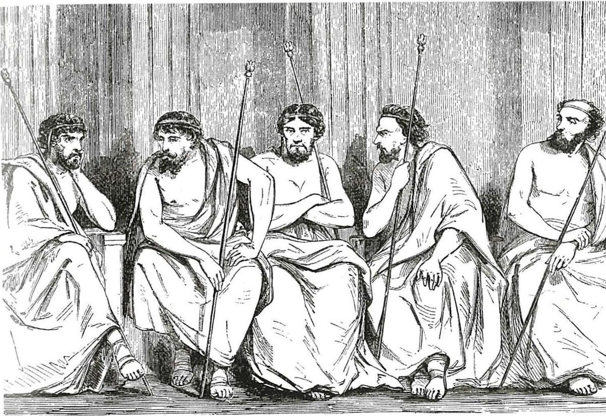

Spartan society to the Battle of Leuctra 371 BC · Lesson 6
The ephorate and the mixed constitution
Five men, elected for a single year, could fine a king. Who really ran Sparta — and why was its constitution praised as ‘mixed’?
Year 12 Ancient History · Section II, Option G · Present with → or space · Read on a phone with R

Connect · 3 minutes · cold call
From the council and the assembly to the overseers
The gerousia (28 elders + the 2 kings) prepared the business and judged the gravest cases; the ekklesia decided by shouting — but only on what was put to it, and the rider let the elders and kings dissolve it.
The fourth part of the constitution, the one the Great Rhetra never mentions: five ephors. Who watched the kings — and why did writers call Sparta’s constitution ‘mixed’?
One key idea from Lesson 5, in one sentence.
Learning intentions and success criteria · 2 minutes
Today’s goals
- evaluate how the ephorate balanced the power of the kings and the people
- evaluate how Xenophon and Aristotle judged the Spartan system of government
- plan a 12-mark response that uses a source and own knowledge
- explain at least four powers of the ephors, including their checks on the kings, naming a source for each
- explain why Sparta was praised as a ‘mixed constitution’, and what Aristotle thought of it
- separate what Aristotle reports from what he judges
- write a thesis and three-paragraph plan for HSC 2022 Q11(d)
An ephor (“overseer”) is one official; the ephorate is the board of five — never the ekklesia, the citizens’ assembly.
Note-making · today’s routine
How to structure your notes
questions and key terms
short phrases, arrows (→ led to), abbreviations (eph. = ephors)
- 1Listen and look firstDon’t copy while the slide is being explained.
- 2Write your own notes at each ✎ checkpointPhrases, not sentences. Arrows for cause and effect.
- 3Compare with the model notesThey appear one row at a time. Add what you missed in a second colour.
- 4Copy each cue question into the left columnLater, cover your notes and answer the cue questions from memory.
- 5Finish with a three-sentence summaryFive checkpoints: who the ephors were · their powers · ephors and kings · Aristotle’s verdict · the system in practice.
Key vocabulary
Words you will use today
| The office | Meaning |
|---|---|
| ephor | one of five chief officials elected each year; the word means overseer |
| ephorate | the office of ephor, or the board of five ephors |
| eponymous ephor | the ephor whose name identified the year |
| magistrate | an elected official of the state |
| embassy | a group of envoys sent by another state |
| capital case | a trial in which the penalty could be death |
| The constitution | Meaning |
|---|---|
| mixed constitution | a government blending rule by one (monarchy), by a few (oligarchy) and by the many (democracy) |
| aristocracy | rule by the ‘best’ — men of birth and merit |
| oligarchy | rule by a small, privileged group |
| probouleusis | preparing business in advance: the gerousia drew up the motions (Lesson 5) |
| accountable | having to answer for your actions to someone who can punish you |
Spelling: Cooley’s translations use Greek forms (Lykourgos, Theopompos, Kleomenes, Lakedaimonians). In your own writing use Lycurgus, Theopompus, Cleomenes, Lacedaemonians.
1 · Who were the ephors? · I do
Five overseers, elected for one year
Five, elected each year by the assembly. Cooley: “The ephors were the five leading magistrates of Sparta, elected annually by the assembly.”
Probably any Spartiate entitled to vote in the assembly (Cooley). Aristotle complains that “the ephors come from the whole population”.
Cooley: “since an ephor could only serve once, ever poorer Spartans had to serve” as the citizen body shrank.

Can this picture be evidence for the ephors?
No — it is a later artist’s imagination. Only the number five comes from the ancient sources.
1 · Who were the ephors? · We do — two sources
The ephor who named the year
The ephors manage all the most serious business and provide the ephor who gives his name to the year.
Pausanias, Description of Greece 3.11.2 · a Greek traveller writing under Roman rule, 2nd century AD · trans. in Cooley D16
[19.1] The beginning of the treaty shall be: in Lakedaimon, when Pleistolas is ephor, on the fourth day before the end of the month of Artemision …
Thucydides, History of the Peloponnesian War 5.19.1 · an Athenian, writing after 404 BC · trans. B. Wilson · Cooley B17
How did Spartans and Athenians date a year?
By the name of an official: an ephor at Sparta, an archon at Athens. The treaty goes on to give the Athenian date by its archon, Alcaeus.
Why does this matter for us?
An official record names the ephor, so the office was central to Sparta’s public life. Xenophon’s list of the ephors “who gave their names to the years” of the war includes Pleistolas (Cooley E32).
1 · Who were the ephors? · We do — two writers disagree If time
When did the ephorate begin?
Lykourgos was also responsible for the institution of the ephorate and the gerousia.
Herodotus, Histories 1.65.5 · written c. 450s–420s BC · trans. B. Wilson · Cooley F3
Roughly some 130 years after Lykourgos came the appointment of the first ephors, Elatos and his associates, during the reign of Theopompos.
Plutarch, Life of Lykourgos 7.1 · written c. AD 100 · trans. B. Wilson · Cooley D17
Herodotus credits Lycurgus; Plutarch puts the first ephors about 130 years later, under King Theopompus.
The Great Rhetra names kings, elders and assembly, but no ephors (Lesson 3).
The ephorate was added after the Rhetra, at a date no one can fix.
Notes checkpoint 1 of 5
Who were the ephors?
Write your own notes first. Then compare, row by row, and add what you missed in a second colour.
2 · The ephors’ powers · I do — the whole picture, with the source for each
Responsibilities of the ephorate
2 · The ephors’ powers · checking a textbook diagram
Watchers, not advisers
[5] Two ephors also attend, but they take no part in the proceedings unless requested to do so by the king. But because they watch what each person does, they ensure that all present conduct themselves with the appropriate level of decorum.
Xenophon, Constitution of the Lakedaimonians 13.5 · probably written late 390s or 380s BC · trans. B. Wilson · Cooley D7
Were the two ephors on campaign the king’s advisers?
Not normally: they “take no part … unless requested” by the king. Their job was to watch — a check, not advice.
The “advisers” given to King Agis in 418 BC were “ten senior Spartiate officials”, not ephors (Thucydides 5.63, Cooley E98 — section 5).
A modern diagram is an interpretation. Test every label against the ancient evidence.
2 · The ephors’ powers · We do — an admirer’s account
Xenophon: obedience — and the power of the ephors
[2] … in Sparta the most powerful citizens are the ones who show the greatest deference towards the magistrates, taking pride in their own humility, and in running instead of walking to obey their summons. … [4] So the ephors have the right to impose fines on anyone they choose, and to exact immediate payment; they can depose a magistrate from his office even in mid-term, and can also imprison him and put him on trial for his life. Since they possess such extensive powers, by contrast with the practice in other cities, they do not allow elected officials to rule as they like for the whole year of their elective term; instead, rather like tyrants and the presidents of the games, they punish with immediate effect anyone they detect breaking the law in any particular.
Xenophon, Constitution of the Lakedaimonians 8.2–4 (part) · probably written late 390s or 380s BC · an Athenian who fought for King Agesilaus and was given an estate by the Spartans · trans. B. Wilson · Cooley D19
List the ephors’ powers.
Fine anyone, at once · depose any magistrate mid-term · imprison him · put him on trial for his life.
Why is the comparison striking?
An admirer likens the ephors to tyrants — and means it as praise of Spartan obedience.
Cooley: the work is “a kind of political pamphlet, defending Sparta against its critics”, and it “probably depicts a somewhat idealised Sparta”.
2 · The ephors’ powers · We do — reaching into every part of Spartan life
The army, the young — and the helots
[11.2] First of all the ephors issue a proclamation setting out the age groups required to serve as cavalry, hoplites, and then craftsmen.
Xenophon, Constitution of the Lakedaimonians 11.2 · trans. B. Wilson · Cooley D88
Cooley: “They had control over the education system”; they selected men for the élite corps and “controlled the krypteia”.
[4] Significantly, Aristotle reports that the ephors, whenever they first took office, would make a formal declaration of war on the helots, so that their murder would never involve religious pollution.
Plutarch, Life of Lykourgos 28.4 · written c. AD 100 · trans. B. Wilson · Cooley D44
Why declare war on the helots?
Killing an enemy in war brought no religious pollution — so helots could be killed without offending the gods.
One late source: Aristotle, as reported by Plutarch. Say so whenever you use it.
2 · The ephors’ powers · We do — evidence carved at the time
An inscription names the kings and the ephors
[…of the precincts] and the sacrifices and temples and property of the god. The kings were Agis, Pausanias. The ephors were Thyionidas, Aristogenidas, Archistas, Sologas, Phedilas. At Delos the archon was [A]nd[rodik?]os.
Inscription recording Spartan arrangements for the sanctuary of Apollo on Delos, fragment b · c. 403–400 BC · IG V 1, 1564 (Rhodes and Osborne 3) · trans. in Cooley B27. Square brackets mark missing or uncertain letters.
What does listing all five ephors beside the kings suggest?
The ephors shared the kings’ official standing: Sparta’s official acts were recorded under the names of both.
Why trust an inscription?
It is an official record made at the time, not a later writer’s account — though it too was set up for a purpose.
What can it not tell us?
It is a fragment: it names the ephors but says nothing about their powers.
Notes checkpoint 2 of 5
The ephors’ powers
3 · Ephors and kings · We do — Xenophon on the king and the state (1 of 2)
What the king received — and who stayed seated
[2] He laid it down that the king, by virtue of his divine origin, shall offer all public sacrifice on behalf of the state; that he shall lead the army on all expeditions sent out by the state; [3] that he shall receive a portion of every sacrificial animal as his prerogative; that specified tracts of high quality land in many of the territories of the perioikoi shall belong to him, sufficient to sustain the royal household adequately but without excessive wealth. … [6] … Everyone rises from their seats when the king appears, except for the ephors from their official chairs.
Xenophon, Constitution of the Lakedaimonians 15.2–3, 6 (part) · probably written late 390s or 380s BC · trans. B. Wilson · Cooley D9
Which privileges are religious, military and economic?
Public sacrifice; leading every expedition; a portion of every sacrifice and royal estates.
Who does not rise for the king?
The ephors, from their official chairs — honour given to the king, but not by the state’s overseers.
Who does Xenophon credit with all this?
“He” is Lycurgus. Xenophon credits more to the lawgiver than any other source (Cooley) — treat that with care.
3 · Ephors and kings · We do — Xenophon on the king and the state (2 of 2)
The monthly oath
[7] Kings and ephors exchange oaths with one another once a month, ephors on behalf of the state, the kings on their own behalf. The king’s oath declares that he will reign in accordance with the established laws of the state; and for the state the ephors declare that so long as the king keeps his oath, they will maintain the royal prerogatives undiminished. [8] Such, then, are the domestic honours bestowed upon the king during his lifetime. They are not really significantly greater than those of the individual citizen, because Lykourgos had no desire to encourage in them the characteristic arrogance of tyrants, nor to stimulate in the ordinary citizen resentment at the king’s powers. [9] As for the honours heaped upon a king at his death, here the laws of Lykourgos aim to show that the kings of the Lakedaimonians are honoured not as mere mortals but as demigods.
Xenophon, Constitution of the Lakedaimonians 15.7–9 · trans. B. Wilson · Cooley D9
Who swears for whom?
The ephors for the state; each king for himself.
What does the king promise?
To rule by the established laws — every month.
What does “so long as” do?
It makes the kingship conditional on keeping the laws.
3 · Ephors and kings · I do — four checks on the kings
Kings could be watched, fined and tried
The king swore to rule by the laws; the ephors kept his privileges only while he did (Xenophon, D9).
“Two ephors also attend” the king’s sacrifices and watch everyone (Xenophon, D7).
Cooley: the ephors could “impose fines on individual citizens (including kings)”.
In c. 493 BC “Kleomenes’ enemies haled him before the ephors” (Herodotus 6.82, Cooley E19). The court that tried kings included the ephors (section 5).
So what? The kings were honoured as demigods at death, yet in life they were held to the laws by officials who changed every year.
Check for understanding · gesture vote · hold up 1–4 fingers
Which of these was not a power of the ephors?
- 1Presiding over the assembly when it voted
- 2Fining a king
- 3Commanding the army on campaign
- 4Receiving foreign embassies
The king led “the army on all expeditions” (Xenophon, D9). Two ephors went with him — to watch, not to command.
Notes checkpoint 3 of 5
Ephors and kings
4 · Aristotle’s verdict · We do — read the critic
Aristotle on the ephorate
But the rules about the ephorate are also bad. Absolute power over the most important matters is theirs, but the ephors come from the whole population with the result that very frequently extremely poor men stumble into office, who can be bought as a result of their poverty. … Furthermore, because their power was too great and like a tyrant’s, even the kings were forced to curry popular favour. … So this office holds the constitution together, since the people keep quiet through sharing the supreme power … As it is, the kings do so because of the honour given them; the great and the good because of the gerousia (this office is a prize for excellence); the people because of the ephorate (for appointments are made from the whole citizenry). And yet though it is right that this office should be chosen from everyone, it should not be chosen as it currently is since the method is too childish.
Aristotle, Politics 2.9, 1270b6–35 (part) · written 330s–320s BC · trans. in Cooley D18
A philosopher (384–322 BC) based in Athens, whose students described 158 constitutions. Cooley: the Politics was “composed in the 330s/320s by when Sparta was a second-rate power” — after Leuctra (371 BC).
Earlier in Book 2 he reports that “some” praise Sparta as a mix of monarchy, oligarchy and democracy (Politics 2.6). Here he gives his own, much harsher, view.
4 · Aristotle’s verdict · I do, then you sort — click Report or Judgement for each phrase
Report or judgement?
A report states what the office was or did. A judgement is Aristotle’s opinion or explanation. Click to sort; the colour tells you if you are right.
- “Absolute power over the most important matters is theirs” Report: their power — though “Absolute” is his strong word
- “the ephors come from the whole population” Report: how chosen
- “very frequently extremely poor men stumble into office” Judgement built on a report: poor men did serve (Cooley), but “stumble” and “very frequently” are his opinion
- “their power was too great and like a tyrant’s” Judgement: “too great”
- “the ephors have authority in important legal cases” Report: a power
- “So this office holds the constitution together” Judgement: his explanation
- “the method is too childish” Judgement: “childish”
- “the lifestyle of the ephors is not in keeping with the policy of the state” Judgement: his verdict
4 · Aristotle’s verdict · I do — the mixed constitution, and a question
A mixed constitution — but where does the ephorate belong?
Aristotle reports that “some” praised Sparta as a mix of “oligarchy, monarchy, and democracy” (Politics 2.6). How does each part fit?
Both have a point. Open election from all citizens looks democratic; five men with vast power for a year looks oligarchic — even tyrannical.
4 · Aristotle’s verdict · I do — the flaws he finds
Aristotle’s criticisms — fair or extreme?
- poor men “who can be bought”
- power “too great and like a tyrant’s”
- judge without written laws
- a lifestyle “too relaxed”
- elders took bribes
- never held to account
- judge for life, though “old age can affect mind as well as body”
- chosen by birth, not by their lives
- set against each other on purpose: safety depended “on the kings being at loggerheads”
“Though some of Aristotle’s interpretation is extreme”, the lack of written laws, popular courts and any public scrutiny of outgoing officials “did make the ephors hugely powerful.”
4 · Aristotle’s verdict · You do · 7 minutes · press K for the timer
Annotate Aristotle: O, V, P, R, L
As for the kingship, whether it is better or not better for states, should be a separate discussion; but certainly it would be better that each should be chosen for his own lifestyle rather than as they are chosen now. It is clear that the lawgiver does not himself think that he can make them great and good – at any rate he mistrusts them as not being sufficiently good men, and therefore they used to send enemies together on embassies and thought that the safety of the state was dependent on the kings being at loggerheads.
Aristotle, Politics 2.9, 1271a18–26 · written 330s–320s BC · trans. in Cooley D1
Annotate this extract and the extract on the ephorate (two slides back), in your notes, in your own words.
- O — when did he write, and what had happened to Sparta by then?
- V — which statements are reports, and which judgements?
- P — he compared constitutions to find the best: why look for faults?
- R — one criticism you think fair, one exaggerated
- L — what does he not tell us about how the ekklesia worked?
O: Ar., Athens, 330s–320s BC, after Leuctra · V: powers + how chosen; why each group backs the system · P: hunting faults · R: powers confirmed by Xen.; some views “extreme” (Cooley) · L: his own day; nothing on assembly procedure
Notes checkpoint 4 of 5
Aristotle’s verdict
5 · How did it really work? · We do — add the checks to the diagram
Checks and balances: who checks whom?
5 · How did it really work? · case study 1 of 3 · 432 BC (Lesson 5)
432 BC: the ephor runs the vote, the king is overruled
[1] After this speech, in his capacity as presiding ephor, he put the question to the vote in the assembly of the Lakedaimonians. [2] Lakedaimonians take decisions by acclamation rather than casting votes, and he pretended that he could not tell from their shouts which side of the debate had won. In reality, he wanted them to make their vote clearly and unequivocally, and thus to inspire them to action. … [3] The two sides separated and there was a large majority for those who thought the treaties had been broken.
Thucydides, History of the Peloponnesian War 1.87.1–3 · written late 5th century BC · trans. B. Wilson · Cooley E31
What does it show?
The ephor Sthenelaidas presided and chose how to take the vote.
The assembly decided, and rejected King Archidamus’ caution. Cooley: the king’s speech was “a view, not a command nor state policy – and, of course, it is rejected by popular vote.”
Why the division? Thucydides: to “inspire them to action”; Cooley suggests it “may have been intended to bring moral pressure on the undecided”.
5 · How did it really work? · case study 2 of 3 · 418 BC
418 BC: a king punished — and given advisers
[2] … in a frenzy of anger which was unlike their usual behaviour they voted to tear down his house and to fine him 10,000 drachmas. [3] He begged them not to do so, promising to redeem his disgrace by heroic action when he next took the field, and after that they could do whatever they wished. [4] So they suspended the fine and the destruction of his house, but passed a temporary measure, of a kind hitherto unheard of in Sparta, by which ten senior Spartiate officials would be appointed as his advisers, and that he would not be allowed to lead an army out of the city without their official sanction.
Thucydides, History of the Peloponnesian War 5.63, on King Agis after his truce with Argos · trans. B. Wilson · Cooley E98
How does it show the limits on royal power?
King Agis made a truce on his own and led the army home; the Spartans voted a huge fine and the destruction of his house.
Even his command was restricted: no army out of the city without his advisers’ sanction.
The advisers were ten Spartiates, not ephors — and the measure was “temporary”, “hitherto unheard of”.
5 · How did it really work? · case study 3 of 3 · 403 BC
403 BC: a king on trial before elders and ephors
When Pausanias returned from Athens after fighting a pointless battle, his enemies put him on trial. In the case of the king of the Lakedaimonians, the court that sat consisted of the twenty-eight so-called elders and the ruling ephors, along with the king of the other house. Fourteen of the elders together with Agis (II), the king of the other house, decided that Pausanias was guilty, but the rest of the court voted for acquittal.
Pausanias, Description of Greece 3.5.2 · 2nd century AD, about King Pausanias in 403 BC · trans. in Cooley E44
For it is customary for two of the ephors to go on campaign with the king …
Xenophon, Hellenika 2.4.36 · trans. in Cooley E43
What does the trial reveal?
The court for a king: the 28 elders, the ephors and the other king.
The vote was close: 14 elders and King Agis against; the rest of the court, including the ephors, for acquittal.
Rival kings, a divided gerousia, and ephors with a decisive voice: power was shared and contested.
5 · How did it really work? · I do — personal power
Yet some kings dominated
Cooley: a king’s influence “depended less on actual constitutional power than on an individual’s personal authority”. Cleomenes I (c. 520–c. 490 BC) and Agesilaus II (c. 399–360 BC) each dominated Spartan policy for decades.
The gerousia sat for life; the ephors for one year; the assembly had the final vote, but only on motions put to it.
The ephors and the elders had the greatest power at that time under the constitution. The former rule for just a one-off year, the elders hold their office for life, both groups being appointed so that the kings should not be absolute rulers … whenever he happened to be seated on the throne, doing official business, he would stand up when the ephors came in …
Plutarch, Life of Agesilaos (part) · written c. AD 100 · trans. in Cooley E47
How did Agesilaus gain power?
By courting the ephors and elders instead of clashing with them — obedience became his route to influence.
5 · How did it really work? · weighing the witnesses If time
Admirer, critic — and a system that changed
[1] If someone were to ask me whether I think that Lykourgos’ laws remain unchanged to this day, I have to confess in all honesty that I could not say so with any confidence.
Xenophon, Constitution of the Lakedaimonians 14.1 · c. 380 BC (Cooley) · trans. B. Wilson · Cooley E70
An admirer, writing before Leuctra: praises obedience to the ephors — yet admits he cannot say Lycurgus’ laws remain unchanged.
A critic with hindsight: praise is “outweighed by his severe criticism of a number of fundamental flaws” (Schütrumpf, as cited by Cooley).
In your writing: name each source, say when it was written, and never describe one frozen system for three centuries.
Check for understanding · gesture vote
“The ephors were the real rulers of Sparta.”
Agree
Partly
Disagree
Justify your vote with one case study: 432, 418 or 403 BC.
Notes checkpoint 5 of 5
How did the system really work?
Finish your notes
Summary: three sentences
- Who were the ephors, and what could they do?
- How did they limit the kings?
- Was Sparta a balanced mixed constitution?
The ephors were five officials elected each year from the whole citizen body, who presided over the gerousia and assembly, fined and tried citizens, and controlled embassies, the army call-up and education. They limited the kings through a monthly oath that made the kingship conditional, by watching them on campaign, and by fining and trying them. Sparta was praised as a mixed constitution, but Aristotle criticised the ephors’ tyrant-like power, and the case studies show power shared and contested rather than neatly balanced.
6 · Answering HSC questions
Today’s lesson has been examined twice
25 marks, about 45 minutes — about 1.8 minutes a mark. 6 marks ≈ 11 minutes; 12 marks ≈ 22 minutes.
NESA: “Relate cause and effect. Make the relationships between things evident. Provide why and/or how.”
2022 markers: “using the correct names of the elements of the Spartan political system”.
Question 1 (2019, 6 marks): we take NESA’s own sample apart. Question 2 (2022, 12 marks, with a source): we deconstruct and plan it, you plan your own, then compare with a model paragraph.
HSC 2019 · Section II · Question 10 (b) · 6 marks
What does the ephorate reveal about Spartan political organisation in this period?
Question 1 · I do — watch how the question is taken apart, then how NESA’s sample is built.
HSC 2019 Q10(b) · I do — deconstruct the question
What the question is really asking
Not a glossary key word. Use each feature of the ephorate as evidence and say what it shows about the whole system.
From the office (who, how chosen, powers) to the system: kings, gerousia, assembly and the balance between them.
To 371 BC. Your writers span centuries, so name and date them.
About 11 minutes · a judgement first · four or five features, each tied to what it reveals · about 130–200 words (NESA’s own sample is shorter: 74 words).
HSC 2019 Q10(b) · the marking guidelines
What the markers rewarded
| Marks | Criteria (2019, part (b)) |
|---|---|
| 6 | Demonstrates thorough knowledge and understanding of historical features relevant to the question · Communicates ideas and information logically using appropriate historical terms and concepts |
| 4–5 | Demonstrates sound knowledge and understanding of historical features relevant to the question · Communicates using appropriate terms and concepts |
| 2–3 | Provides some knowledge and/or understanding relevant to the question · Communicates using some historical terms and concepts |
| 1 | Makes a general statement(s) relevant to the question |
“Thorough” knowledge, communicated “logically”: features linked into one argument about the system, not a list.
NESA published no marking feedback for this question, so the sample answer (next) is our best guide.
Source: NESA, 2019 HSC Ancient History Marking Guidelines (Section II, part (b)), quoted exactly.
HSC 2019 Q10(b) · I do — NESA’s sample answer, annotated
NESA’s sample answer, in 74 words
Sample answer from the NESA 2019 HSC Ancient History Marking Guidelines · 74 words
Marker’s margin
Even sharper: say what each feature reveals (open election → the people’s share; vast power for a year → the few), and name Xenophon and Aristotle.
HSC 2019 Q10(b) · three answers that fall short
Why answers drop marks
The ephors were five officials elected every year. They could fine people, went on campaign with the kings and declared war on the helots.
Some knowledge, but it never says what the ephorate reveals about how Sparta was governed.
The ephorate reveals that the kings’ power was limited: the ephors exchanged oaths with them every month and two went on campaign to watch them …
Sound, but only the kings. Nothing on the people’s share (open election) or on the ephors’ own great power.
The ephorate was the assembly of all Spartan citizens over 30. It elected the elders by shouting and voted on war.
That is the ekklesia. The 2025 markers asked for “not confusing the ekklesia with the ephorate, gerousia, krypteia or other Spartan terms”.
Written for this lesson to show the marking criteria — not real student answers.
HSC 2022 · Section II · Question 11 (d) · 12 marks
Explain the political organisation of Sparta in this period. Support your response using evidence from Source M and other relevant sources.
Question 2 · We do, then you do — deconstruct and plan it together, plan your own, then compare with a model paragraph.
HSC 2022 Q11(d) · We do — read the source on the paper
Source M
Some, indeed, say that the best constitution is a combination of all existing forms, and they praise the Lacedaemonian [Spartan] because it is made up of oligarchy, monarchy, and democracy . . . but the Ephors are chosen from the whole people, and so the office is apt to fall into the hands of very poor men, who, being badly off, are open to bribes.
“Source M: Aristotle, On the Spartan Constitution 2.6–9” (NESA’s label). It is not the title of a work by Aristotle: the text is B. Jowett’s translation of Aristotle, Politics 2.6 and 2.9. The second sentence is the same passage as Cooley D18 in another translation; the first (Politics 2.6) is not in Cooley.
Whose view is the first sentence?
Others’: Aristotle reports what “some” say. It shows how Sparta was praised, not his own verdict.
What does he criticise?
The ephors: open election → very poor men → bribes. Cooley’s translation: “who can be bought as a result of their poverty”.
How should you use it?
Quote a few words, say what they show, then test them against other sources: Xenophon, Thucydides, Pausanias.
HSC 2022 Q11(d) · We do — deconstruct together
What does this question want?
How the parts worked together and why: cause and effect. A tour of four institutions is a description.
Kings, gerousia, ekklesia, ephorate — who could take part (citizenship) and how power was balanced.
Archaic period to 371 BC; show awareness that the system changed.
Use Source M, then corroborate or challenge it: Xenophon, Thucydides, Plutarch, Pausanias.
About 22 minutes · a thesis that answers “explain” · three paragraphs · about 450–600 words.
HSC 2022 Q11(d) · the marking guidelines and the markers’ feedback
What the markers rewarded
| Marks | Criteria (2022, part (d)) |
|---|---|
| 10–12 | Provides a well-developed explanation, demonstrating detailed knowledge and understanding relevant to the question · Integrates evidence from the source provided and other relevant sources to support the response · Communicates ideas and information logically and coherently using appropriate historical terms and concepts |
| 7–9 | Provides an explanation, demonstrating knowledge and understanding relevant to the question · Uses evidence from the source provided to support the response and refers to other relevant source(s) · Communicates ideas and information logically using appropriate historical terms and concepts |
| 4–6 | Provides a description demonstrating some knowledge relevant to the question · May refer to the source provided and/or to other source(s) · Communicates ideas using some historical terms and/or concepts |
| 1–3 | Makes general statement(s) in relation to the question · May refer to source(s) · May use historical terms and/or concepts |
use the source provided and multiple other sources to support their explanation (d)clearly explain rather than describe the Spartan political organisation (d)
using the correct names of the elements of the Spartan political system (d)providing a coherent explanation (d)referring to multiple sources and using the supplied source to support their explanation (d)
Source: NESA, 2022 HSC Ancient History Marking Guidelines (Section II, part (d)) and the 2022 marking feedback for Question 11.
HSC 2022 Q11(d) · NESA’s “answers could include”
What the marking guidelines listed
EphorsGerousiaDual kingshipEkklesiaMixed constitution – eg Source M reveals the perceived strength of Sparta’s mixed constitution, made up of oligarchic, monarchical and democratic elementsLycurgan reformStrict citizenship of the city stateWomen participated in the assembly and could participate in acclamation but were excluded from other formal structures within Spartan society.
Cooley’s account has no place for women in the assembly: it was “probably all men over 30 years of age”, and in Greek constitutions “women were also universally excluded”. He gives no evidence that Spartan women joined its acclamation.
“Lycurgan reform”: Plutarch dates the ephorate about 130 years after Lycurgus (D17). “Citizenship”: only full Spartiates had a political voice.
Source: NESA, 2022 HSC Ancient History Marking Guidelines, Section II part (d), Option G (quoted exactly).
HSC 2022 Q11(d) · We do — a model plan, written for this lesson
Thesis, three paragraphs, evidence under each
| Move | Topic sentence | Evidence | → Explain |
|---|---|---|---|
| Thesis | Sparta’s political organisation combined monarchy, oligarchy and democracy in the ‘mixed’ constitution that, Source M says, ‘some’ praised — but in practice the balance favoured the few: the gerousia and, above all, the ephors. | ||
| 1 · The dual kingship | Two hereditary kings held great military and religious power, but limited political power. | Herodotus 6.56–57 (D5, D8) · 5.75 (D6) · Xenophon 15 (D9: the oath) | honour and command, but two votes in thirty and a monthly oath |
| 2 · Gerousia and ekklesia | The people had ‘decision and power’, but only on motions the gerousia prepared. | Plutarch, Lyc. 6, 26 (D48, D15) · Thucydides 1.87 (E31) · Aristotle (D13) · only full Spartiates voted | accept or reject, never propose: the few outweighed the many |
| 3 · The ephorate (Source M) | Meant to give the people a share, it became the strongest office. | Source M · Aristotle (D18) · Xenophon 8.4, 15.7 (D19, D9) · Plutarch, Lyc. 28.4 (D44, reporting Aristotle) · Lyc. 7 (D17) | Source M shows the design; the powers show where control lay |
| Conclusion | The ‘mixed’ ideal describes how the system was meant to work; the ephors and the gerousia show that it worked mainly for the few. | ||
This plan covers every point NESA listed except women in the assembly, which Cooley does not support.
HSC 2022 Q11(d) · You do · 23 minutes · press K for the timer
Explain the political organisation of Sparta in this period. Support your response using evidence from Source M and other relevant sources. (12 marks)
- a thesis that explains — a position, not a list
- three topic sentences: kings · gerousia and ekklesia · ephorate and the balance
- the evidence under each, with Source M quoted and tested
- the correct names: ekklesia, gerousia, ephors
Start: “Sparta’s political organisation combined three forms of rule, but in practice …”
HSC 2022 Q11(d) · annotated model · paragraph 3 of the plan
Using Source M — then testing it
Model written for this lesson · one body paragraph ≈ 200 words
Marker’s margin
HSC 2022 Q11(d) · Self-mark and peer check
Check your plan
Swap theses with a partner. Does it explain, or only describe? The markers wanted students to “clearly explain rather than describe the Spartan political organisation”.
Outline the powers of the ephors. (4 marks)
Assess the role of the ephorate in limiting the power of the Spartan kings. (10 marks)
Practice and review · 1 of 7 · sequencing
Put these in order, earliest first — and say what each shows
- AA peace treaty is dated “when Pleistolas is ephor”
- BThe presiding ephor Sthenelaidas puts the war vote to the assembly
- CThe Spartans give King Agis ten advisers
- DKing Pausanias is narrowly acquitted by elders and ephors
- EAn inscription at Delos names two kings and five ephors
- FThe first ephors, in the reign of King Theopompus (Plutarch)
- GAristotle criticises the ephors in his Politics
- HXenophon praises Spartan obedience to the ephors
- F (reign of Theopompus, c. 720–675 BC; Plutarch: about 130 years after Lycurgus) — the ephorate came after the Great Rhetra.
- B (432 BC) — an ephor presided; the assembly decided and overruled King Archidamus.
- A (421 BC) — one ephor named the year.
- C (418 BC) — a king could be punished; the advisers were Spartiates, not ephors.
- D (403 BC) — the court for kings: elders, ephors and the other king.
- E (c. 403–400 BC) — the ephors’ official standing beside the kings (could be as early as 403: accept D and E either way).
- H (probably late 390s or 380s BC) — an admirer, before Leuctra.
- G (330s–320s BC) — a critic, after Leuctra.
Practice and review · 2 of 7 · true, false, justify
True or false? Justify with a source
- 1Five new ephors were elected every year. True — “The ephors were the five leading magistrates of Sparta, elected annually by the assembly” (Cooley).
- 2The kings and ephors exchanged oaths once a month. True — “Kings and ephors exchange oaths with one another once a month” (Xenophon, D9).
- 3The ephorate is listed in the Great Rhetra. False — the Rhetra names kings, elders and assembly; Plutarch dates the first ephors “Roughly some 130 years after Lykourgos” (D17).
- 4A Spartan could serve as ephor many times. False — Cooley: “an ephor could only serve once”.
- 5The two ephors on campaign advised the king on every decision. False — they “take no part in the proceedings unless requested to do so by the king” (Xenophon, D7); they watched.
- 6The ten advisers given to King Agis in 418 BC were ephors. False — “ten senior Spartiate officials would be appointed as his advisers” (Thucydides 5.63, E98).
- 7Xenophon, an admirer of Sparta, compares the ephors to tyrants. True — “rather like tyrants and the presidents of the games” (D19).
- 8Aristotle wrote his criticisms before Sparta’s defeat at Leuctra. False — the Politics was “composed in the 330s/320s by when Sparta was a second-rate power” (Cooley).
Practice and review · 3 of 7 · cloze
Fill the gaps
- Every year the assembly elected five ephors.
- Kings and ephors exchanged oaths once a month.
- Aristotle said very poor ephors could be bought.
- The ephor who gave his name to the year was called the eponymous ephor.
- Plutarch dates the first ephors to the reign of King Theopompus.
- Xenophon says the ephors could depose a magistrate even in mid-term.
- In 418 BC the Spartans appointed ten advisers to King Agis.
- Aristotle says the people support the constitution because of the ephorate.
Practice and review · 4 of 7 · write an analytical paragraph
How did the ephorate limit the power of the Spartan kings?
The ephorate limited the kings mainly by making their position conditional and their conduct answerable, though a forceful king could still dominate. Each month, Xenophon reports, the king swore to reign ‘in accordance with the established laws of the state’, while the ephors promised to keep his prerogatives ‘so long as the king keeps his oath’; on campaign, two ephors attended his sacrifices and watched what everyone did. Kings could also be tried: in 403 BC King Pausanias faced a court of the elders and the ruling ephors and was acquitted only narrowly. A king could not simply act as he pleased, because his privileges, his conduct in the field and even his throne depended in part on officials elected each year. Xenophon admired Sparta and may describe the system as it was meant to work, yet the trials support him; on the other hand, Cooley notes that kings such as Cleomenes I and Agesilaus II still dominated through personal authority. The ephors set firm limits on the office of king, but how far they restrained a particular king depended on that king’s standing.
Practice and review · 5 of 7 · extended response · HSC-style, written for this lesson
To what extent was the government of Sparta a balanced mixed constitution? (15 marks)
Use evidence from relevant sources. Plan it in four moves:
- Thesis in your first sentence: was Sparta truly balanced, or did one part — the ephorate, or the elite gerousia — hold the real power?
- How each part was meant to balance the others: Aristotle on why kings, the “great and the good” and the people each backed the system (D18); the monthly oath (D9).
- The system in action: 432 BC (Thucydides, E31), 418 BC (Thucydides, E98), 403 BC (Pausanias, E44).
- Weigh the witnesses: Aristotle (a critic, 330s–320s BC) against Xenophon (an admirer, probably writing in the late 390s or 380s BC) — and Cooley’s view that Sparta fits a narrow oligarchy “reasonably well”.
Practice and review · 6 of 7 · Chapter 5 review, questions 1–4
Chapter review: government (1)
- What were the four parts of the Spartan constitution? The two kings, the gerousia (council of elders), the ekklesia (assembly of citizens) and the ephorate (five annual officials).
- What were the two main functions of the gerousia? Preparing business for the assembly (probouleusis), and judging the most serious cases — with the ephors it formed the highest court, which could even try a king.
- How did the ekklesia make decisions, and what could ordinary citizens not do there? By shouting: “Lakedaimonians take decisions by acclamation rather than casting votes” (Thucydides 1.87). Citizens could not table motions, and the rider let elders and kings dissolve an assembly that altered them; Cooley finds no evidence they could speak.
- Explain how and why Sthenelaidas changed the usual voting procedure in 432 BC. He claimed he could not judge the shout and had citizens stand on two sides. Thucydides says he wanted a clear vote to inspire them; Cooley suggests it “may have been intended to bring moral pressure on the undecided”.
Practice and review · 7 of 7 · Chapter 5 review, questions 5–8
Chapter review: government (2)
- Why did Aristotle think the election of the elders was childish, and what does this reveal about his own values? Judging candidates by the loudness of a shout seemed crude to him, and candidates had to campaign: “a man should hold office whether he wants it or not, if he is worthy of it” (D13). He valued merit and reasoned judgement over popular display and ambition.
- Compare Xenophon’s and Aristotle’s views of the ephors. Why might they differ? Xenophon, an admirer writing before Leuctra, presents the ephors’ tyrant-like power as a sign of Spartan obedience; Aristotle, a philosopher writing after Leuctra, sees the same power as dangerous in poor, bribable men. Purpose, date and perspective explain the difference.
- Evaluate the claim that the ekklesia had little real power. Use at least two sources. Partly true: it could not propose, ephors managed its votes (Thucydides 1.87), and Cooley calls the system strongly oligarchic. But it elected officials and decided war and peace: in 432 BC it overruled a king, and a treaty of 418 BC begins “The Assembly of the Lakedaimonians has decided” (B19).
- To what extent did the ephorate balance the power of the kings and the people? It checked the kings (oath, campaign, fines, trials) and gave the people a share through open annual election. But five men held power “too great and like a tyrant’s” with little scrutiny, and strong kings like Agesilaus still dominated: it limited the kings more than it empowered the people.
Exit ticket · before you leave
Two sentences
One check on the kings’ power was … because …
Democratic or oligarchic? Where would you put the ephorate — and why?
Next lesson: Spartiates, ‘inferiors’ and perioikoi. Only full citizens could shout in the assembly or serve as ephor — and in about 399 BC the ephors faced a conspiracy led by Cinadon, a man who was not one of the equals.
Sources and credits
Where everything comes from
Quoted from the translations in M. G. L. Cooley (ed.), Sparta, LACTOR Sourcebooks in Ancient History 21, 2nd edn (Cambridge University Press, 2023): Herodotus 1.65.5, 5.75, 6.56–57 and 6.82.1 (F3, D6, D5, D8, E19, trans. B. Wilson); Thucydides 1.87, 5.19.1, 5.59–60 and 5.63 (E31, B17, E97, E98, trans. B. Wilson); Xenophon, Constitution of the Lakedaimonians 4.6, 8.2–4, 11.2, 13.5, 14.1 and 15.2–9 (D79, D19, D88, D7, E70, D9, trans. B. Wilson) and Hellenika 2.3.9–10 and 2.4.36 (E32, E43); Plutarch, Life of Lykourgos 6, 7.1, 26 and 28.4 (D48, D17, D15, D44, trans. B. Wilson) and Life of Agesilaos (E47); Aristotle, Politics 1270b6–35, 1270b35–1271a18 and 1271a18–26 (D18, D13, D1); Pausanias 3.5.2 and 3.11.2 (E44, D16); inscription from Delos, IG V 1, 1564 (B27); a treaty of 418 BC (B19). Cooley’s introductions to the political structure, the kings, the gerousia, the ephorate and the assembly, including E. Schütrumpf, ‘Aristotle on Sparta’ (1994), and G. E. M. de Ste Croix, ‘Trials at Sparta’ (2002), as cited there.
HSC questions, Source M, marking criteria, sample answer, “answers could include” and marking feedback: NSW Education Standards Authority, 2019 and 2022 HSC Ancient History examinations and marking guidelines, and the 2022 and 2025 marking feedback. © NESA. Source M is Aristotle, Politics 2.6 and 2.9, in B. Jowett’s translation, as printed on the 2022 paper. NESA glossary of key words for “explain”.
- Footings and walls identified as part of Sparta’s agora, the centre of public life — Clarke & Garner, Fig 1.6
- A later engraving imagining the five ephors — a modern illustration, not ancient evidence — Clarke & Garner, Fig 2.7
Books: Clarke & Garner, Spartan society textbook (school copy).
Textbook images are reproduced for teaching, with the source given under each one. Diagrams drawn for this lesson: the responsibilities of the ephorate (rebuilt from Clarke & Garner, Fig 2.6); the mixed constitution (merging Hurley et al., Antiquity 2, Source 13, with Aristotle); checks and balances (built on Lesson 3’s redraw of Clarke & Garner, Fig 2.4).